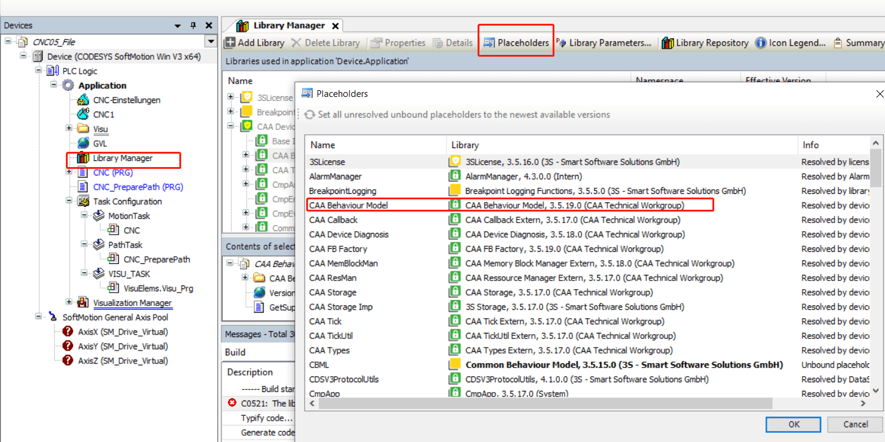
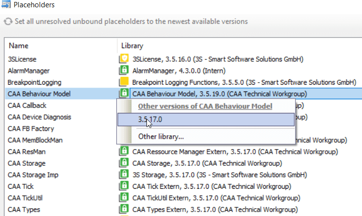

codesys 项目修改依赖库的版本
打开一个别人的项目后编译，发现出现 The library "caa behaviour model, 3.5.19.0 (caa technical workgroup)" was created with the unknown compiler version "3.5.16.30" 的报错：
但是我已经选择下载了缺失的库了，查询后发现是我的 codesys 版本过高，下载的对应库版本也高，而项目之前创建的时候可能是基于低版本库的，需要手动切换回对应版本的库即可。
library manager 下选择 placeholders 定位到报错的那个库：

双击后显示版本菜单，选择对应低版本的选项：

再次编译报错就会消失。